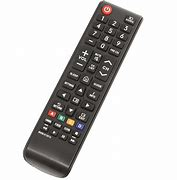

| Tier | Item | Image | Importance | Common Issues | Notes |
|---|---|---|---|---|---|
| S | Smartphone | Used for entertainment, communication and work | screen cracks with one drop | Most people use it daily | |
| A | WI-FI | Essential for Internet Access | Can be slow and unreliable | Hard to do without it | |
| B | Coffee | Keeps you awake | Too much of it can have negetive effects on health | A daily must have for a lot of people | |
| C | Alarm Clock | Wakes you up on time | The sound can be stressful | Can be replaced by phone alarms | |
| D | TV Remote |  | Not necessary, but useful | Can be replace with the phone app |
This was a great learning experience. This assignment helped me practice structuring HTML tables properly. Using everyday essentials made it relatable. I learned how to ensure accessibility by using appropriate table headers. One challenge was always making sure I close the tags the proper way and not forget to do it.